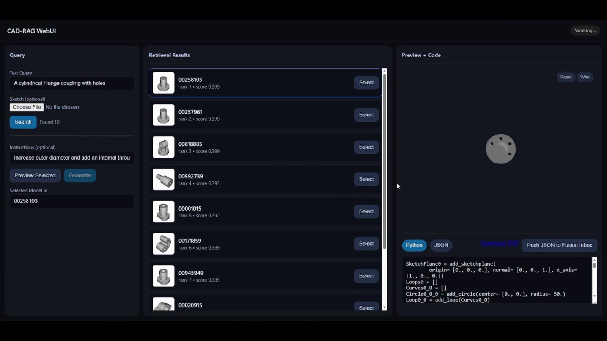
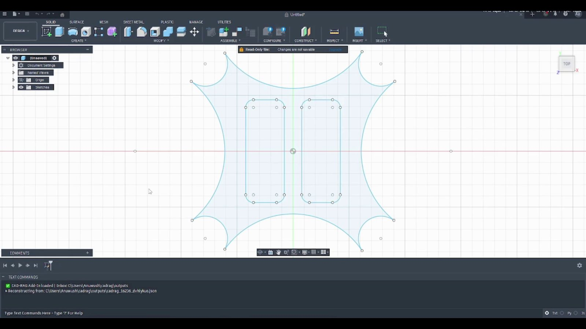

The idea
We tested two routes to editable CAD. One generates the modelling commands directly. The other finds a similar model and edits its commands. I worked mainly on building the data that made retrieval possible.
1Background
We wanted a result someone could keep working on in Fusion 360. For that we needed the sketches, extrusions and cuts that produce the geometry.
2What we built
Generate a model. We trained a Transformer decoder to write modelling commands one token at a time. The sketch and point-cloud encoders learn a shared representation by bringing two views of the same part together. That lets the decoder start from either of those inputs.
Find a model to reuse. We aligned text, image and sketch encoders so the search could rank the same library from any of those queries. A text query can say what a part is for, while a sketch can show an outline that's awkward to describe.
Edit its construction sequence. The language model gets the selected part's commands, the requested change and examples retrieved for that query. Starting from an existing sequence gives it the part's sketches and features to work with. The edited model opens in Fusion 360 with that construction history.




3Building the data
Most of my work was on the retrieval data. We started with 178,238 DeepCAD models and deduplicated them down to 137,004. We paired the geometry with images, text and sketches so we could train the encoders to recognise when different descriptions refer to the same part.
A sketch drawn by hand often leaves out edges and details that are obvious in a CAD render. We collected more than 400 observational sketches and generated about 109,000 contour sketches from the models so the sketch encoder could learn from both.
4Result
In the paper, our method improved curve accuracy, loop accuracy and CLIP similarity over OpenECAD. It appeared in the Journal of WSCG in 2025. We later used the retrieval and editing workflow in desAIgn works.